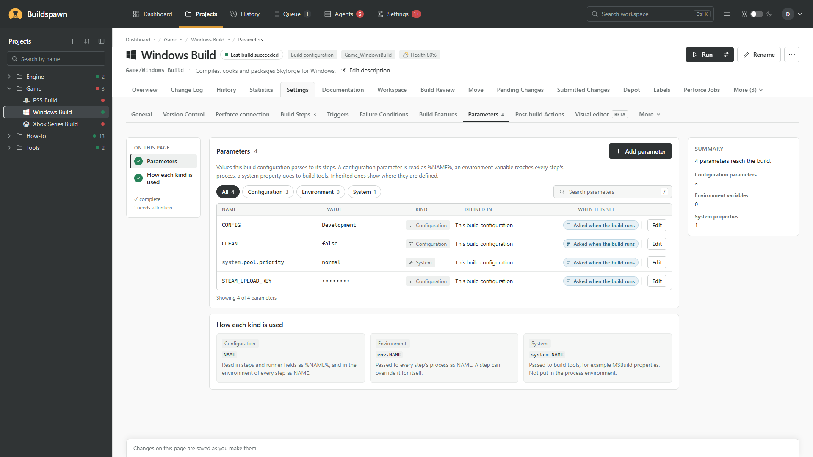

Parameters
Every value a build passes to its steps, in one table. This page explains how the tab works.
When to use it
Use it to define values that the build asks for or passes on. Parameters can come from the build configuration, a template or a project. The kinds and types have their own pages in the Parameters section.

How to set it up
- Open the build configuration and click Settings. Then click Parameters.
- Use the filters Configuration, Environment and System to find a parameter.
- Click Add parameter. Type the name and choose the type.
- Set the default value. Choose whether the build asks for it when it starts.
- Save.
Every field
| Field | What it does | Default | Example |
|---|---|---|---|
| Configuration parameters | Read as %NAME% in steps. They are also in every step's environment. | - | PLATFORM |
Environment variables (env.NAME) | Every step's process gets them. | - | env.BUILD_CONFIG |
System properties (system.NAME) | Go to build tools. | - | system.version |
| Defined in | Whether the value is this build configuration's own or comes from a project or template. | - | Game |
| When it is set | Whether it is asked when the build runs, and its type: text, choice, boolean, password or file. | - | Asked, choice |
| Add parameter | Adds one. Edit on a row changes it. | - | - |
A worked example
Windows Build has the parameter PLATFORM with the choices Win64 and Win32, asked at run time, default Win64. The Unreal step uses %PLATFORM%.
What you see when it runs
When you press Run the dialog asks for the asked parameters. The build page lists the values that were used. Passwords show as dots.
Problems and fixes
| Problem | What to do |
|---|---|
| A value is read-only | It comes from a project or template. Use Override to change it here only. |
| A password is empty in the step | Use a password or credentials parameter and read it as an environment variable. |